卷心菜
食物
卷心菜，回复30%的HP。
49 件物品的用途、基础标价与获取位置。打开交互图鉴可以搜索和筛选。
食物
卷心菜，回复30%的HP。
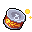
食物
猫粮罐头，回复80%的HP。
食物
芥菜，因拉肚子HP减少15%，但2分钟内持续回复HP。
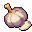
食物
大蒜，2分钟内SP回复量增加。
食物
辣椒，2分钟内缓慢回复必杀技能量。
食物
鲱鱼罐头，6秒内免疫受击硬直。
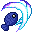
武器
必杀技：咸鱼十字斩。
武器
必杀技：大范围全屏攻击的咸鱼冲击波。
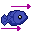
武器
必杀技：具有超长硬直时间的拔鱼斩。
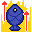
武器
必杀技：猫咪的凝视，可减缓时间流动。
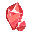
鱼眼宝石
前冲时按攻击键可发动咸鱼二连击。
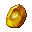
鱼眼宝石
按住下和技能键可使用空中速降。
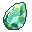
鱼眼宝石
按住上和技能键可发动咸鱼翻滚。
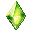
鱼眼宝石
贴近墙壁时可以使用蹬墙跳。
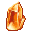
鱼眼宝石
可以趴在滑板上移动和攻击。
鱼眼宝石
下落时按住跳跃键可以在空中飞行。
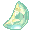
鱼眼宝石
按技能键可以向上冲刺。
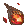
鱼眼宝石
按住攻击键可以产生蓄力咸鱼斩。
配饰
击败敌人后掉落的生命恢复道具变大，恢复量增加，而且生命恢复道具会自动飞向喵露露。
配饰
大幅度减少来自地形的伤害。
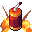
配饰
攻击时给敌人贴上鞭炮（鞭炮一定时间才能贴好），当这个敌人碰撞到其他敌人时鞭炮会爆炸。
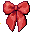
配饰
喵露露落地时产生冲击波，震飞周围所有正处于地面的敌人。
配饰
喵露露造成的硬直时间增加，猫咪凝视消耗的必杀技能量减少。
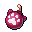
配饰
持续在喵露露头顶掉落敌我不分的爆弹，爆弹落地就会爆炸。
配饰
喵露露靠近隐藏物品时，头顶上方会出现能量气流。
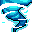
配饰
喵露露趴下时会对附近所有敌人产生浮空力，但处于无敌状态的敌人不受影响。
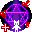
配饰
喵露露所在地对应的一块垂直区域里的重力减少，但喵露露自己不受影响。
配饰
击败敌人后的必杀技能量回复量增加。
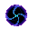
配饰
按住攻击键将持续吸引喵露露附近大部分可被攻击的单位。
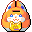
配饰
击败敌人后的猫币掉落数量增加，且猫币落地后会自动飞向喵露露。
配饰
喵露露所有技能的击退力增加。
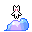
配饰
攻击命中后短时间内降低喵露露所受重力。
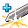
配饰
拼刀成功后的必杀技能量回复量和无敌时间增加，且SP完全回复并重置空中二段跳和冲刺计数。
配饰
向前冲刺，向上冲刺，向下冲刺以及拔鱼斩的速度加快。
配饰
敌人被击败后会产生爆炸。
配饰
普通攻击时以喵露露为中心产生冲击波，击退附近的所有敌人。
配饰
喵露露会把敌人踩扁。
配饰
普通攻击时发射气流，气流虽然不能造成伤害但是拥有击退力。
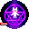
配饰
减少喵露露的所受重力。这个配饰不消耗装备栏位。
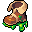
配饰
喵露露不会在云朵地形上弹跳。
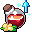
配饰
提升SP回复速度。
配饰
咸鱼三连击时在背后产生毒气，对敌人造成伤害。
配饰
可以让喵露露免疫不良BUFF并且无视一次致命伤害，但受到致命伤后这个配饰会失效，经过存档点后恢复原样。
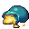
配饰
喵露露的咸鱼可以攻击到地形，但靠近无法攀爬的地形和有害地形时这个配饰会暂时失效。
弧晶硬币
可以用来启动小卖部里的魔法装置。
逗猫棒
可以用来在小镇的猫头石像上强化体能。
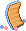
猫抓板
可以用来在小镇的猫头石像上强化技能。
铃铛
增加1个饰品栏位。
金币
可用于商店购买物品。
物品说明、图像与地图位置整理自游戏原版资料。收集清单按官方事件核对，部分动态奖励和普通敌人掉落尚未收录。
未核实的获取条件会标为“待核对”。基础标价不代表具体商店当前有售，实际解锁条件与库存以游戏为准。
原版图像与游戏文字、名称、设定的权利归相应权利人；资料整理和导出不代表取得再分发许可。